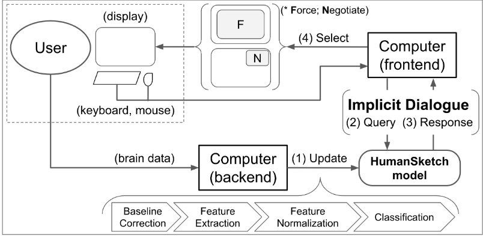
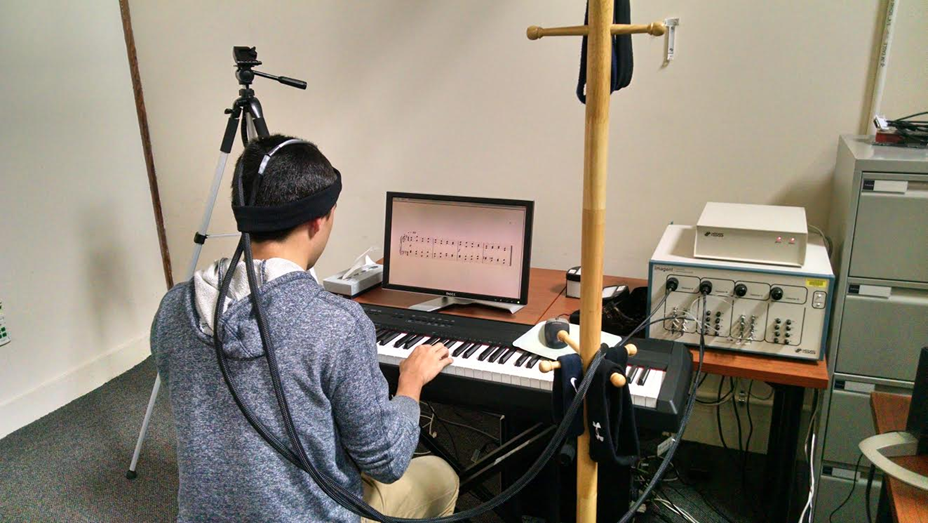
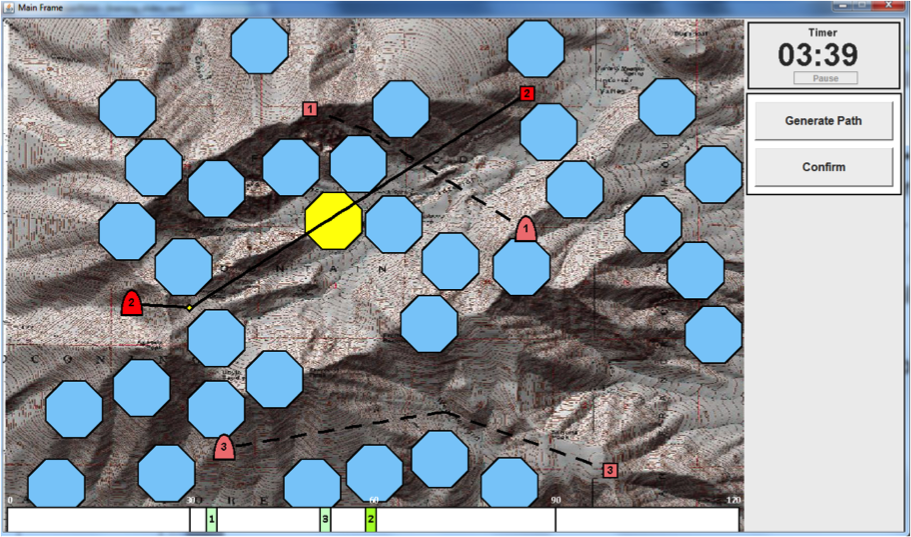

Past Research Projects
Please visit our publications for information about our past projects

Investigating Effects of Mental Workload Manipulation during Motion Using Multimodel Sensors
The purpose of this study is to quantify the neural (e.g. changes in blood oxygenation using Functional Near-Infrared Spectroscopy and/or changes in electrical activity using Electroencephalography), physiological (e.g. changes in eye movements or other motion artifacts), and behavioral (i.e., cognitive task performance) effects of mental workload manipulations on participants while they are in motion.

An Implicit Dialogue Injection System for Interruption Management
Worked towards redesigning the conventional on/off interruption management tactic (a.k.a. “Do Not Disturb Mode”) for situations where interruptions are inevitable. We intro- duced an implicit dialogue injection system, in which the computer implicitly observed the user’s state of busyness from passive mea- surement of the prefrontal cortex to determine how to interrupt the user.

An Adaptive Learning Interface that Adjusts Task Difficulty based on Brain State
Worked towards redesigning the conventional on/off interruption management tactic (a.k.a. “Do Not Disturb Mode”) for situations where interruptions are inevitable. We intro- duced an implicit dialogue injection system, in which the computer implicitly observed the user’s state of busyness from passive mea- surement of the prefrontal cortex to determine how to interrupt the user.

Dynamic difficulty using brain metrics of workload
We ran a laboratory study in which participants performed path planning for multiple unmanned aerial vehicles (UAVs) in a simulation. Based on their state, we varied the difficulty of the task by adding or removing UAVs and found that we were able to decrease er- rors by 35% over a baseline condition